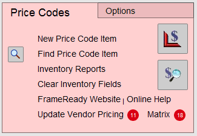
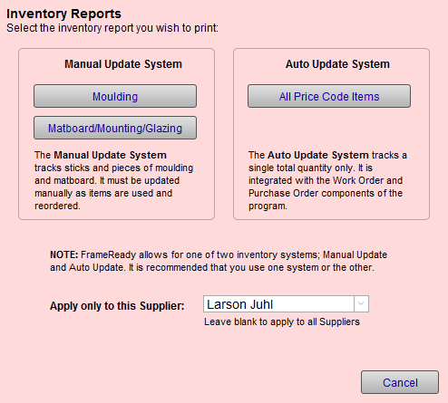
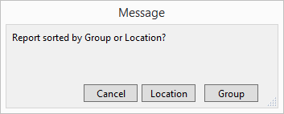
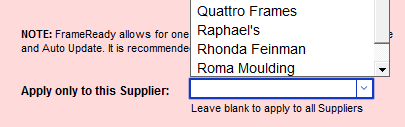
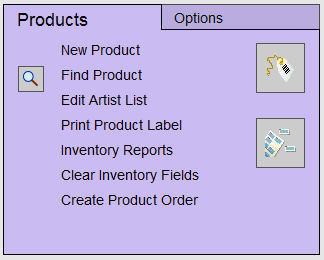
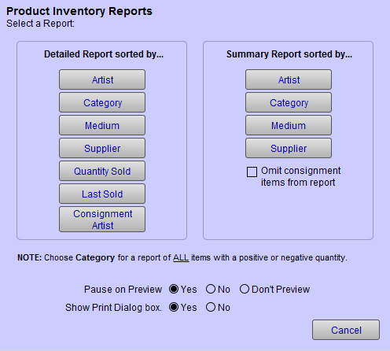

Inventory Reports Overview
FrameReady can track framing and retail product inventory.
Framing Material Inventory Report
-
Check current stock using Main Menu > Price Codes section > Inventory Reports. The report can be displayed for moulding, matboard, mounting, and glass by Location or Group.
-
Knowing what you have in stock isn’t enough. Use the above report in conjunction with the best selling moulding report, Moulding and Matboard Usage Report, to see which inventory isn’t moving. Print it for any date range and get the total footage or quantity sold, as well as listing the items actually sold in order of volume. See Printing the Moulding Usage by Supplier Report.
-
Designers can check the inventory at the point-of-sale for rush orders by using the Frame1-Frame5 detail screens.
-
Inventory can be managed manually or automatically. You must choose one system or the other. If you use the automatic update system the report can be printed for all Price Code items sorted by Location or Group.
How to Print a Price Codes Inventory Report
-
On the Main Menu, in the Price Codes section, click the Inventory Reports button.

-
A dialog box appears showing a variety of reports available.

-
If you are using the Manual Update System, then use the Moulding and Matboard/Mounting/Glazing buttons.
A dialog appears.

Choose to sort the data in the report either by Location or Group (Location is a field from the Work Order, Group is from the Price Codes file).
A print preview of the report appears.
Click Continue to print. -
You can pre-select a supplier in the Apply only to this Supplier dropdown.
Doing so will filter the results in the reports you choose.

To clear the Supplier, right-click in the field and choose Cut.
Retail Product Inventory Report
Summary Report
-
Can be printed in four different sort orders: by Artist, Category, Medium or Supplier.
-
Total quantity in stock and wholesale value will appear at the bottom of the last page.
-
See also: Retail Product Summary
Detailed Report
-
Can be printed in seven different sort orders: by Artist, Category, Medium, Supplier, Quantity Sold, Last Sold, or Consignment Artist.
-
Top selling items can be set for automatic reordering when falling below prescribed thresholds.
-
See also: Retail Product Detail Report
Physical Inventory
-
Year end inventory reports for physical counting may be printed at the end of the fiscal year.
-
See also: Closing Off Year End
How to Print a Retail Product Inventory Report
-
On the Main Menu, in the Products section, click the Inventory Reports button.

-
A dialog box appears showing a variety of reports available.

-
Select a report listed under the "Detailed" or "Summary" column.
A print preview of the report appears. -
Click Continue to print.
Or go to Products > Form view > Select a Report sidebar button.
© 2023 Adatasol, Inc.